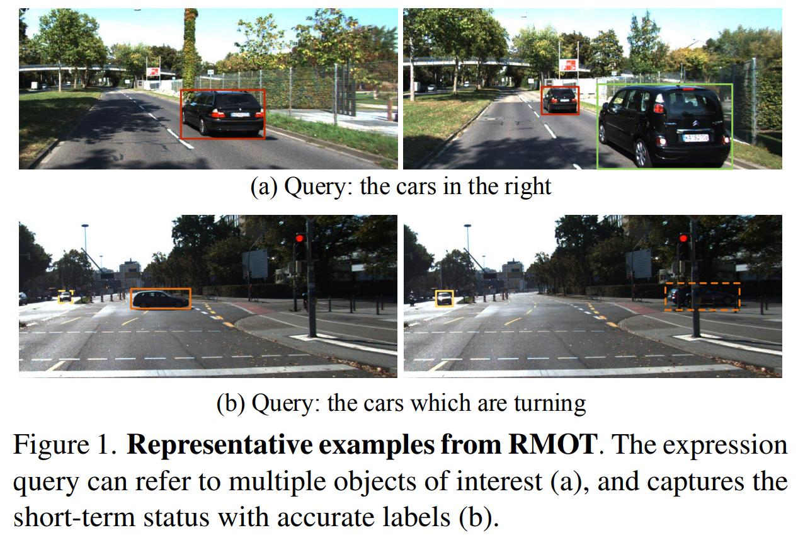

About Me
From 2019 to present, I am a PhD student in Department of Computer Science, Beijing Institute of Technology, advised by Prof. Jianbing Shen.
From 2022 to present, I am a research intern at Foundation model group in MEGVII Technology, working with Tiancai Wang and Xiangyu Zhang.
In 2021-2022, I was a research intern at Inception Institute of Artificial Intelligence, UAE, working with Xingping Dong and Prof. Ling Shao.
In 2019, I recevied my Bachelor’s degree from the Class of Xu, Beijing Institute of Technology.
News
- 🎉🎉🎉 One paper (Refering Multi-Object Tracking) is accepted by CVPR2023.
Publications
CVPR 2023
Referring Multi-Object Tracking
Dongming Wu*, Wencheng Han*, Tiancai Wang, Xingping Dong, Xiangyu Zhang, Jianbing Shen
- RMOT is a new referring understanding task that can detect and track an arbitrary number of objects following human instruction. We propose the first RMOT benckmark Refer-KITTI, and a baseline model TransRMOT.
Service
Reviewer for CVPR’2023
Reviewer for TIP, TNNLS, TMM, etc